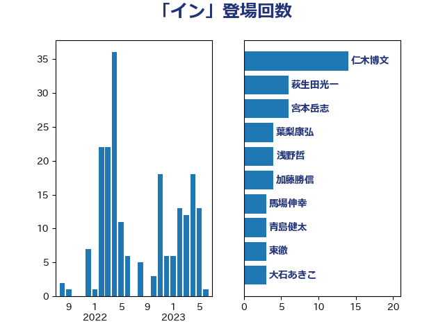

単語「イン」

| 茂木敏充 | 自由民主党 | 10 回 |
| 中島克仁 | 立憲民主党 | 9 回 |
| 萩生田光一 | 自由民主党 | 8 回 |
| 宮本岳志 | 日本共産党 | 6 回 |
| 仁木博文 | 無所属 | 5 回 |
| 岩渕友 | 日本共産党 | 5 回 |
| 美延映夫 | 日本維新の会 | 5 回 |
| 東徹 | 日本維新の会 | 4 回 |
| 櫻井周 | 立憲民主党 | 4 回 |
| 浅田均 | 日本維新の会 | 4 回 |
| 井坂信彦 | 立憲民主党 | 3 回 |
| 伊波洋一 | 無所属 | 3 回 |
| 土田慎 | 自由民主党 | 3 回 |
| 大島敦 | 立憲民主党 | 3 回 |
| 打越さく良 | 立憲民主党 | 3 回 |
| 菅直人 | 立憲民主党 | 3 回 |
| 音喜多駿 | 日本維新の会 | 3 回 |
| 丸川珠代 | 自由民主党 | 2 回 |
| 伊藤孝恵 | 国民民主党 | 2 回 |
| 伴野豊 | 立憲民主党 | 2 回 |
| 国光あやの | 自由民主党 | 2 回 |
| 小沼巧 | 立憲民主党 | 2 回 |
| 小泉進次郎 | 自由民主党 | 2 回 |
| 山崎誠 | 立憲民主党 | 2 回 |
| 河野義博 | 公明党 | 2 回 |
| 田村貴昭 | 日本共産党 | 2 回 |
| 遠藤敬 | 日本維新の会 | 2 回 |
| 金子恭之 | 自由民主党 | 2 回 |
| 高野光二郎 | 自由民主党 | 2 回 |
| 三木亨 | 自由民主党 | 1 回 |
| 三浦信祐 | 公明党 | 1 回 |
| 中谷一馬 | 立憲民主党 | 1 回 |
| 佐藤英道 | 公明党 | 1 回 |
| 倉林明子 | 日本共産党 | 1 回 |
| 前原誠司 | 国民民主党 | 1 回 |
| 加藤勝信 | 自由民主党 | 1 回 |
| 加藤竜祥 | 自由民主党 | 1 回 |
| 勝部賢志 | 立憲民主党 | 1 回 |
| 古賀之士 | 立憲民主党 | 1 回 |
| 吉田統彦 | 立憲民主党 | 1 回 |
| 國重徹 | 公明党 | 1 回 |
| 坂本祐之輔 | 立憲民主党 | 1 回 |
| 奥野総一郎 | 立憲民主党 | 1 回 |
| 寺田学 | 立憲民主党 | 1 回 |
| 寺田静 | 無所属 | 1 回 |
| 小宮山泰子 | 立憲民主党 | 1 回 |
| 小西洋之 | 立憲民主党 | 1 回 |
| 山岸一生 | 立憲民主党 | 1 回 |
| 山本香苗 | 公明党 | 1 回 |
| 山添拓 | 日本共産党 | 1 回 |
| 山田太郎 | 自由民主党 | 1 回 |
| 山際大志郎 | 自由民主党 | 1 回 |
| 岸信夫 | 自由民主党 | 1 回 |
| 岸田文雄 | 自由民主党 | 1 回 |
| 有村治子 | 自由民主党 | 1 回 |
| 本田顕子 | 自由民主党 | 1 回 |
| 松本尚 | 自由民主党 | 1 回 |
| 浅野哲 | 国民民主党 | 1 回 |
| 浜田聡 | NHK党 | 1 回 |
| 玄葉光一郎 | 立憲民主党 | 1 回 |
| 玉木雄一郎 | 国民民主党 | 1 回 |
| 石橋通宏 | 立憲民主党 | 1 回 |
| 神谷裕 | 立憲民主党 | 1 回 |
| 秋本真利 | 自由民主党 | 1 回 |
| 竹内真二 | 公明党 | 1 回 |
| 若松謙維 | 公明党 | 1 回 |
| 荒井優 | 立憲民主党 | 1 回 |
| 落合貴之 | 立憲民主党 | 1 回 |
| 西岡秀子 | 国民民主党 | 1 回 |
| 西銘恒三郎 | 自由民主党 | 1 回 |
| 谷合正明 | 公明党 | 1 回 |
| 赤池誠章 | 自由民主党 | 1 回 |
| 赤羽一嘉 | 公明党 | 1 回 |
| 足立康史 | 日本維新の会 | 1 回 |
| 輿水恵一 | 公明党 | 1 回 |
| 野上浩太郎 | 自由民主党 | 1 回 |